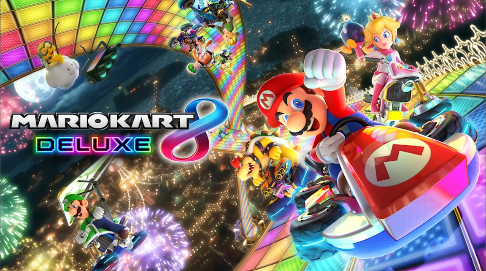

Mario Kart 8 Deluxe
CLP $45.990
CLP $45.990
Donde quieras y cuando quieras con Mario Kart 8 Deluxe para Nintendo Switch, incluso en partidas multijugador local para hasta ocho pilotos. Los populares circuitos y personajes de la versión de Wii U regresan, junto a los circuitos y personajes descargables, además de personajes nuevos: Inkling chico e Inkling chica de Splatoon; el Rey Boo; Huesitos y Bowsy. Y cuando la competición es tan elevada, cada piloto necesitará llevar ahora dos objetos simultáneamente, incluyendo novedades como el ladrón de objetos Boo o la pluma, que permite saltar en las batallas.